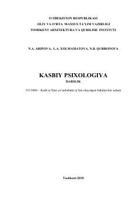

KPKasbiy psixologiya fanining nazariy asoslari, psixodiagnostikasi va ta'lim jarayoniga bag'ishlangan darslik.
Mazkur darslik ta'lim va taraqqiyotning o'zaro bog'liqligi, kasbiy psixologiyaning nazariy asoslari, kasbiy o'qitish hamda kasbiy faoliyat psixodiagnostikasiga bag'ishlangan. Unda talabalarning o'quv faoliyati, kasbiy o'zlikni anglash va shaxs psixologiyasiga oid muhim ilmiy-uslubiy ma'lumotlar keltirilgan. Kitob kasb ta'limi yo'nalishidagi bakalavrlar va talabalar uchun mo'ljallangan.